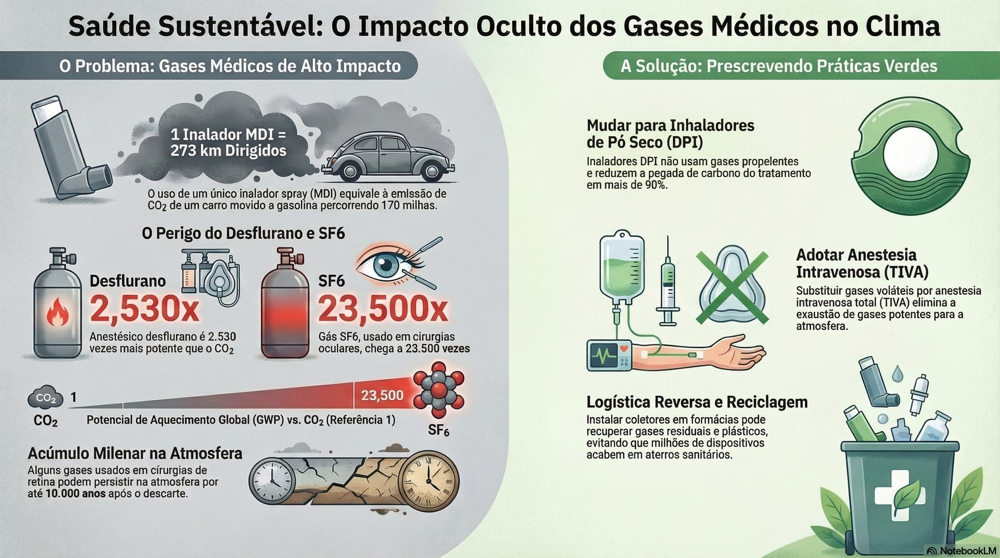

Saúde sustentável: o impacto oculto dos gases médicos no clima

Ler o texto do infográfico
O problema: gases médicos de alto impacto
- 1 inalador MDI = 273 km dirigidos: o uso de um único inalador spray (MDI) equivale à emissão de CO₂ de um carro a gasolina percorrendo 170 milhas.
- Desflurano, 2.530 vezes: anestésico 2.530 vezes mais potente que o CO₂.
- SF6, 23.500 vezes: gás usado em cirurgias oculares.
- Acúmulo milenar na atmosfera: alguns gases usados em cirurgias de retina podem persistir na atmosfera por até 10.000 anos após o descarte.
Potencial de aquecimento global (GWP) em relação ao CO₂ (= 1).
A solução: prescrevendo práticas verdes
- Mudar para inaladores de pó seco (DPI): não usam gases propelentes e reduzem a pegada de carbono do tratamento em mais de 90%.
- Adotar anestesia intravenosa total (TIVA): substituir gases voláteis elimina a exaustão de gases potentes para a atmosfera.
- Logística reversa e reciclagem: coletores em farmácias podem recuperar gases residuais e plásticos, evitando que milhões de dispositivos acabem em aterros sanitários.